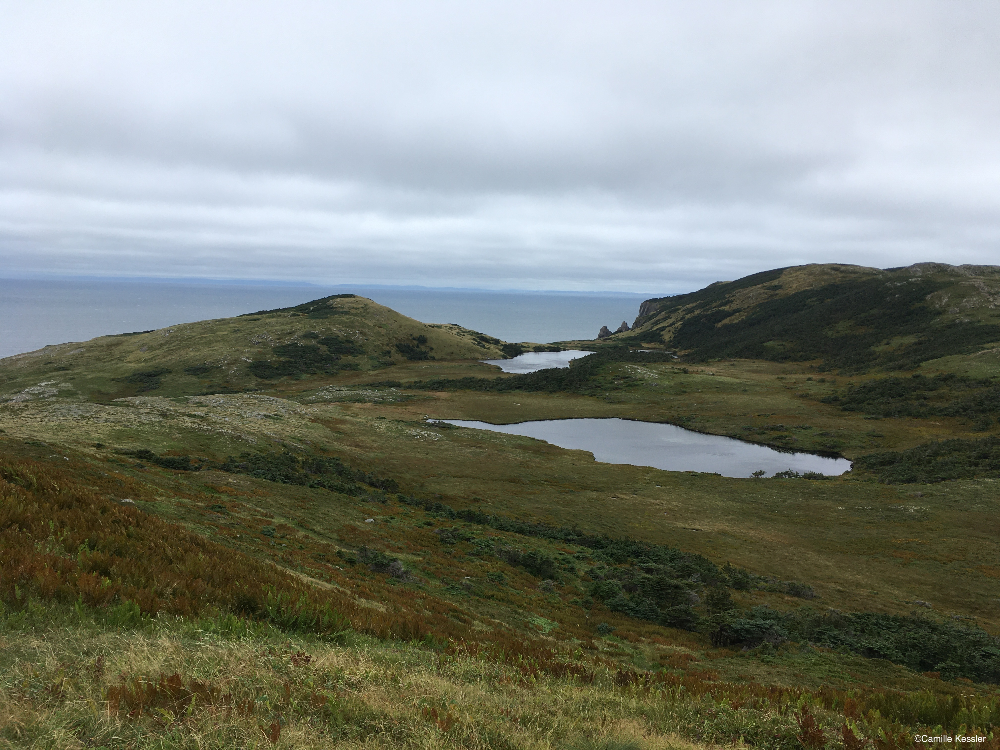

Read Brooklyn Cars' undergraduate work, just published in Heredity
Cars, B. S., Kessler, C., Hoffman, E. A., Côté, S. D., Koelsch, D., & Shafer, A. B. A. (2024).
Island demographics and trait associations in white-tailed deer. Heredity, 1–10.
Here is the abstract:
When a population is isolated and composed of few individuals, genetic drift is the paramount evolutionary
force and results in the loss of genetic diversity. Inbreeding might also occur, resulting in genomic regions
that are identical by descent, manifesting as runs of homozygosity (ROHs) and the expression of recessive traits.
Likewise, the genes underlying traits of interest can be revealed by comparing fixed SNPs and divergent haplotypes
between affected and unaffected individuals. Populations of white-tailed deer (Odocoileus virginianus) on islands of
Saint Pierre and Miquelon (SPM, France) have high incidences of leucism and malocclusions, both considered genetic
defects; on the Florida Keys islands (USA) deer exhibit smaller body sizes, a polygenic trait. Here we aimed to
reconstruct island demography and identify the genes associated with these traits in a pseudo case-control design.
The two island populations showed reduced levels of genomic diversity and a build-up of deleterious mutations compared
to mainland deer; there was also significant genome-wide divergence in Key deer. Key deer showed higher inbreeding
levels, but not longer ROHs, consistent with long-term isolation. We identified multiple trait-related genes in ROHs
including LAMTOR2 which has links to pigmentation changes, and NPVF which is linked to craniofacial abnormalities.
Our mixed approach of linking ROHs, fixed SNPs and haplotypes matched a high number (~50) of a-priori body size
candidate genes in Key deer. This suite of biomarkers and candidate genes should prove useful for population
monitoring, noting all three phenotypes show patterns consistent with a complex trait and non-Mendelian inheritance.
I spent three months in Prof. Jochen Wolf's lab
at LMU, Munich (Germany), from January through March 2024.
I was very interested in learning more on the lab's amazing work on pinnipeds and birds evolutionary biology,
and to meet its members. I was also looking forward to gain from feedback on my work and generally exchange
ideas.
Thanks to Jochen and all the lab and department members for the warm welcome and great discussions! I really had
a great time.
Read the second chapter of my PhD on the demographic history of white-tailed and mule deer:
Kessler, C., & Shafer, A. B. A. (2024).Genomic Analyses Capture the Human-Induced Demographic
Collapse and Recovery in a
Wide-Ranging Cervid, Molecular Biology and Evolution, 41(3), msae038.
Here is the abstract:
The glacial cycles of the Quaternary heavily impacted species through successions of population
contractions
and expansions. Similarly, populations have been intensely shaped by human pressures such as
unregulated hunting
and land use changes. White-tailed and mule deer survived in different refugia through the Last
Glacial Maximum,
and their populations were severely reduced after the European colonization. Here, we analyzed 73
resequenced
deer genomes from across their North American range to understand the consequences of climatic and
anthropogenic
pressures on deer demographic and adaptive history. We found strong signals of climate-induced
vicariance and
demographic decline; notably, multiple sequentially Markovian coalescent recovers a severe decline
in mainland
white-tailed deer effective population size (Ne) at the end of the Last Glacial Maximum. We found
robust evidence
for colonial overharvest in the form of a recent and dramatic drop in Ne in all analyzed
populations. Historical
census size and restocking data show a clear parallel to historical Ne estimates, and temporal Ne/Nc
ratio shows
patterns of conservation concern for mule deer. Signatures of selection highlight genes related to
temperature,
including a cold receptor previously highlighted in woolly mammoth. We also detected immune genes
that we
surmise reflect the changing land use patterns in North America. Our study provides a detailed
picture of
anthropogenic and climatic-induced decline in deer diversity and clues to understanding the
conservation
concerns of mule deer and the successful demographic recovery of white-tailed deer.

On 10 September 2023, my supervisor and I embarked on a long journey to the
French archipelago of Saint-Pierre et Miquelon, off the coast of Newfoundland,
for a community outreach project.
White-tailed deer were introduced on Miquelon in the 50's with a small
number of founder individuals. The authorities were worried that inbreeding might be causing
phenotypic
defects in the populations as deer on the island presents a high frequency of leucism, a coat colour
abnormality, and of malloclusions, a jaw deformity where the lower jaw is shorter than the upper
jaw.
They mandated Prof. Aaron Shafer to carry out genomic analyses in order to estimate the inbreeding
within the
population and find the reason for the high frequencies of such unusual deer on Miquelon.
The project was carried out by Brooklyn Cars for her undergraduate honours thesis which I
co-supervised, and as the only fluent
French speaker on the team, I was responsible for presenting the results to the SPM community.

We had two presentations during the trip, the people in attendance showed great interest in
what we had to say. In short, that the high frequency of unsual traits in SPM deer were not caused
by
inbreeding and that the population was not at risk on the genomic level, you can learn more
here.
We had the chance to tour the islands and hike, we saw some deer including nursing twins.
Travelling to Saint-Pierre et Miquelon was never something I had imagined I would do, you don't wake up
one
day and think "Ouh I want to go there!". I'm sure many people hadn't heard about the place before the
last season of
Peaky Blinders so I feel very lucky to have had the opportunity to go on such a fun and interesting
trip.